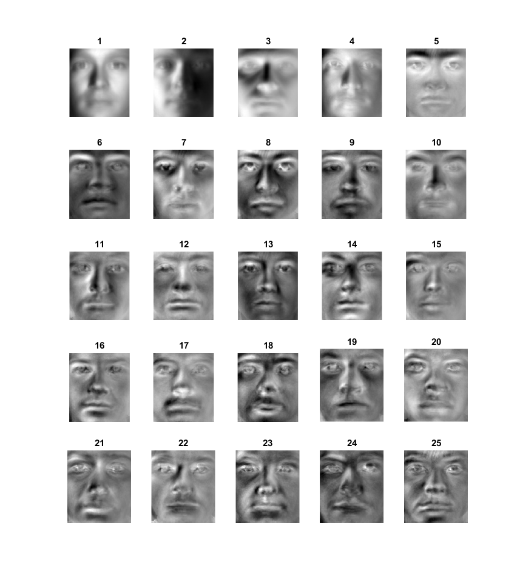

Contents
Training images
X_yale = zeros(192*168,1520);
yaleF_person = dir([ '../Data/Dataset/yaleB*']);
for i = 1:38
yaleFiles = dir(['../Data/Dataset/' yaleF_person(i).name '/*.pgm']);
for j = 1:40
imgPath = strcat(['../Data/Dataset/' yaleF_person(i).name '/' yaleFiles(j).name]);
X_yale(:,40*(i-1)+j) = reshape(im2double((imread(imgPath))),[192*168,1]);
end
end
mean_face_yale = (sum(X_yale,2)/1520);
Xbar_yale = X_yale - mean_face_yale;
[U,S,V] = svds(Xbar_yale,1000);
[d,ind] = sort(diag(S),'descend');
S = S(ind,ind);
S= sqrt(S);
U = U(:,ind);
U_2 = U.*U;
U_data=U./sqrt(sum(U_2));
image = reshape(im2double((imread(imgPath))),[192*168,1]);
image_bar = image - mean_face_yale;
figure;
k_vec = [2, 10, 20, 50, 75, 100, 125, 150, 175];
Reconstructing face 40 of person 38 for various values of K
for i=1:9
vk = U_data(:,1:k_vec(1,i));
coeff = vk'*image_bar;
reconstruction = vk*coeff + mean_face_yale;
subplot(3,3,i);
imshow(reshape(reconstruction,[192 168]));
title(num2str(k_vec(1,i)));
end
Showing the eigen faces for top 25 eigen values on the dataset
figure;
for i=1:25
subplot(5,5,i);
imshow(mat2gray(reshape(U_data(:,i),[192 168])));
title(num2str(i));
end
